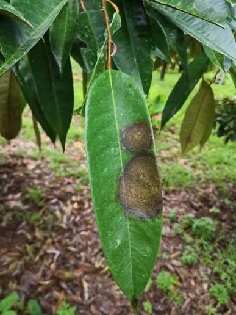

1. โรครากเน่าโคนเน่า (Phytophthora)
เชื้อรา Phytophthora palmivora (โรคร้ายแรงอันดับ 1 ของทุเรียน)
ฤดูฝน / ดินแฉะน้ำขัง ความชื้นสัมพัทธ์สูงกว่า 80% และแปลงที่ระบายน้ำไม่ดี
1. รีบขุดร่องระบายน้ำรอบโคนต้น อย่าให้น้ำขังแฉะเด็ดขาด
2. สำรวจโคนต้นและกิ่งใหญ่ หากพบแผลมีน้ำยางไหล ให้รีบถากเปลือกที่เน่าออกแล้วทาป้ายยาทันที ก่อนแผลลามรอบต้นจนต้นตาย
จุดสังเกตอาการของโรค
เกิดแผลฉ่ำน้ำสีน้ำตาลอ่อนถึงดำตามแผ่นใบ ใบเหลืองซีดเหี่ยวลู่และร่วงหล่นอย่างรวดเร็ว
เปลือกลำต้นชื้นฉ่ำน้ำ ช่วงเช้าเห็นหยดน้ำยางสีน้ำตาลแดงไหลออก เมื่อถากเปลือกดูจะพบเนื้อเยื่อข้างในเน่าเป็นสีน้ำตาลเข้ม
รากฝอยเปลี่ยนเป็นสีน้ำตาลเข้ม เปื่อยยุ่ยดึงขาดง่าย ทำให้ใบปลายกิ่งเหี่ยวเฉาและกิ่งแห้งตาย
แนวทางการป้องกันและกำจัด 3 ขั้นตอน
ตัดวงจรเชื้อในดินและรักษาแผลเบื้องต้น
- จัดการน้ำและดิน: ยกโคกปลูกและทำร่องระบายน้ำไม่ให้น้ำท่วมขัง ปรับสภาพดินด้วยปูนขาวหรือโดโลไมท์ให้ค่า pH อยู่ที่ 6.0 – 6.5
- ถากแผลรักษาทันที: ใช้มีดสะอาดถากเปลือกส่วนที่เน่าออกให้ถึงเนื้อไม้ดี แล้วทาแผลด้วยสารเคมีหรือไตรโคเดอร์มา ซ้ำทุก 7 วัน จนกว่าแผลจะแห้ง
- ทำความสะอาดเครื่องมือ: เช็ดมีดถากแผลด้วยแอลกอฮอล์ 70% ทุกครั้งก่อนเปลี่ยนต้น เพื่อไม่ให้เชื้อติดไปต้นอื่น
ใช้เชื้อราดีควบคุมเชื้อราร้ายในดิน
- หว่านทางดินรอบทรงพุ่ม: ใช้ เชื้อราไตรโคเดอร์มา 1 กก. + รำละเอียด 4 กก. + ปุ๋ยหมัก 100 กก. คลุกให้เข้ากัน หว่านรอบโคนต้นและแนวชายพุ่ม อัตรา 3–5 กก./ต้น ทุก 2–3 เดือน
- ฉีดพ่นหรือราดโคนต้น: ใช้หัวเชื้อไตรโคเดอร์มา 100 กรัม ต่อน้ำ 20 ลิตร (1 กก./น้ำ 200 ลิตร) พ่นใต้ทรงพุ่มและลำต้นในช่วงเย็นแดดอ่อน
- ทาแผลที่ลำต้น: ผสมหัวเชื้อไตรโคเดอร์มาเข้มข้นกับปูนแดงหรือน้ำสะอาด ทาบริเวณแผลที่ถากเปลือกเน่าออกแล้ว
อัตราผสมมาตรฐานต่อถังพ่น 20 ลิตร (เมื่อระบาดรุนแรง)
- สูตรทาแผลที่โคนต้น/กิ่ง: ใช้ ฟอสอีทิล-อะลูมิเนียม 80% WP (80–100 กรัม/น้ำ 1 ลิตร) หรือ เมทาแลกซิล 25% WP (50–60 กรัม/น้ำ 1 ลิตร) ทาแผลทุก 7 วัน
- สูตรฉีดพ่นทรงพุ่ม / ราดโคนต้น: ใช้ ฟอสอีทิล-อะลูมิเนียม 80% WP อัตรา 30–50 กรัม ต่อน้ำ 20 ลิตร หรือ เมทาแลกซิล 25% WP อัตรา 30–50 กรัม ต่อน้ำ 20 ลิตร ทุก 7–10 วัน
- กรณีต้นใหญ่ระบาดหนัก (ฝังเข็มลำต้น): ใช้ ฟอสโฟนิก แอซิด 40% SL อัตรา 20 มล. ต่อต้น อัดเข้าลำต้นเพื่อหยุดเชื้อเร่งด่วน
- ห้ามผสมไตรโคเดอร์มาร่วมกับสารเคมีฆ่าเชื้อรา ในถังเดียวกันเด็ดขาด และควรเว้นระยะห่างกันอย่างน้อย 7–10 วัน
- ควรสลับกลุ่มสารเคมี (เช่น สลับระหว่าง ฟอสอีทิล-อะลูมิเนียม กับ เมทาแลกซิล) ไม่ใช้ยาตัวเดิมซ้ำติดกันเกิน 2–3 ครั้ง เพื่อป้องกันเชื้อดื้อยา